Mo 2026-07-20
Basic
40min @4:55/km
2026-07-20 bis 2026-07-26
40min @4:55/km
1:20h @4:50/km
60min @205W
W29 wurde mit rund 12:40h Training und 664 erfassten TSS deutlich belastender als eine normale gemischte Woche. Erfasst wurden etwa 1:06h Schwimmen, 8:56h Radfahren und 2:35h Laufen; die beiden langen Radtage am Freitag und Samstag brachten zusammen 7:31h und 280 TSS. Der Basic Run am Montag blieb mit 4:48/km GAP und 126bpm kontrolliert, der Long Run am Dienstag war mit 4:22/km GAP bei 125bpm deutlich schneller, wurde durch die starke Kühlung im Regen aber kardiovaskulär gut vertragen. Das Threshold Bike am Mittwoch wurde mit 3x15min bei 304 bis 305W stabil absolviert; der starke Herzfrequenzanstieg im letzten Intervall ist im Kontext des fehlenden Ventilators wahrscheinlich hitzebedingt. Der Threshold Run am Donnerstag erreichte in den Arbeitsabschnitten ungefähr 3:39 bis 3:54/km GAP und setzte vor dem langen Radblock einen weiteren klaren Reiz. Der automatisch verwendete FIT-Fallback von 127 TSS für das Threshold Bike ist wegen des fehlenden eindeutigen Intervals.icu-Matches wahrscheinlich zu hoch, ändert aber nichts an der insgesamt sehr hohen Wochenbelastung.
Der Kratschmayer Triathlon Waldenburg wurde am Sonntag trotz der Vorbelastung in 1:04:37 als Gesamtzweiter von 216 Finishern und Sieger der M30 beendet. Das Bike war mit 294W im Schnitt und 309W NP sehr stark, der offizielle 5-km-Lauf in 18:01 war die schnellste Laufzeit des gesamten Feldes. Das Schwimmen blieb ohne Neopren mit 10:20 und Rang 26 die klare relative Schwäche; die reine 500-m-FIT-Lap dauerte 9:47 bei 1:57/100m und bestätigt den Bedarf an mehr Technik- und Freiwassertransfer. Am Morgen nach dem Rennen ist die kurzfristige Erholung bereits gut: HRV 104ms liegt wieder im Korridor, Ruhepuls 40bpm und 7:19h Schlaf bei Score 88 sind unauffällig. Der Load-Status bleibt mit ATL 73, CTL 61, TSB -13 und ACR 1,208 dennoch erhöht; das 7-Tage-Gewichtsmittel von 79,26kg ist stabiler als Anfang Juli und die 6.732 Schritte im 7-Tage-Mittel bis Sonntag zeigen keine außergewöhnliche Alltagsbelastung.
Für W30 wird der Basic Run auf Athletenwunsch bereits am Montag absolviert, wegen des Rennens am Vortag aber auf 40min bei 4:55/km begrenzt und ausschließlich bei unauffälligen Beinen durchgeführt. Das Long Bike liegt am Mittwoch und wird nach dem sehr großen Radblock auf 2:45h bei 205W begrenzt. Damit Long Bike und Long Run nicht direkt aufeinanderfolgen, liegt das reduzierte Threshold Bike mit 3x10min bei 300W am Donnerstag zwischen den beiden langen Einheiten. Der Long Run folgt am Freitag mit 1:20h bei 4:50/km und wird mit dem aeroben Schwimmen kombiniert; das gewünschte Basic Bike am Samstag bleibt mit 60min bei 205W locker. Der kürzere Threshold Run liegt am Sonntag mit 4x6min bei 3:55/km, damit vor dem voraussichtlichen Long Bike am Montag in W31 weniger Restermüdung entsteht als nach einem sonntäglichen Long Run. Die Schwimmeinheiten am Dienstag und Freitag kombinieren kontrollierte Schwellenarbeit mit aeroben Wiederholungen, wobei die Pace wegen der erkennbaren Lücke zwischen Pool-CSS und Freiwasserleistung nicht aggressiv verschärft wird. Damit sind alle Standardreize enthalten, das Volumen sinkt nach W29 trotzdem sinnvoll und die kontinuierliche Vorbereitung auf Thiersee am 2026-08-16 sowie die wichtigere 70.3-WM in Nizza am 2026-09-13 bleibt erhalten.
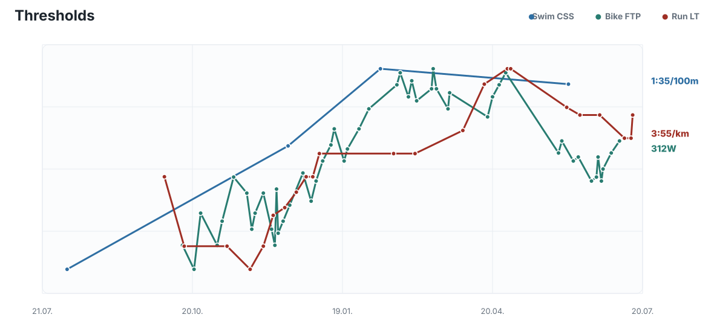

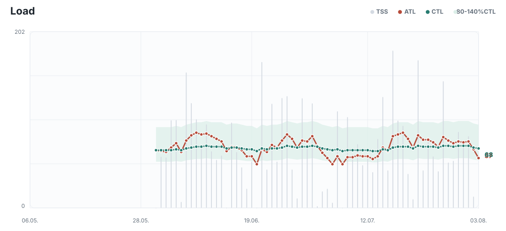
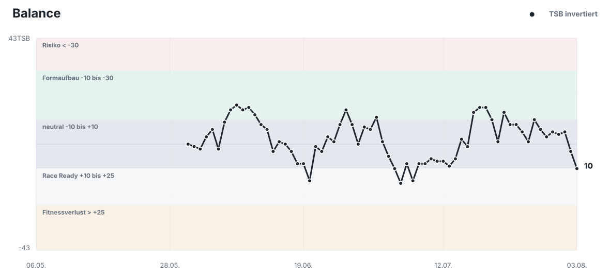
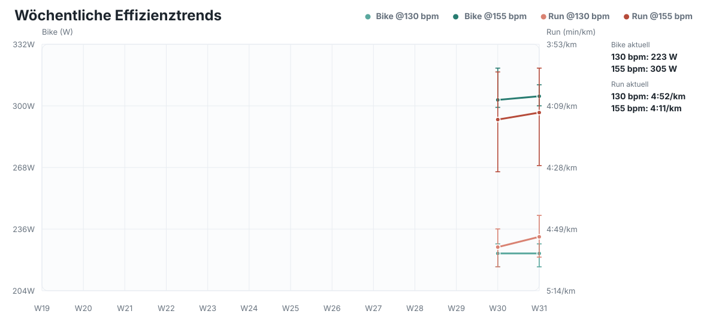
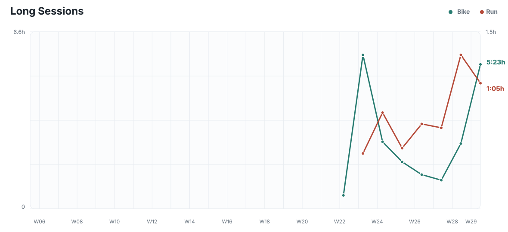

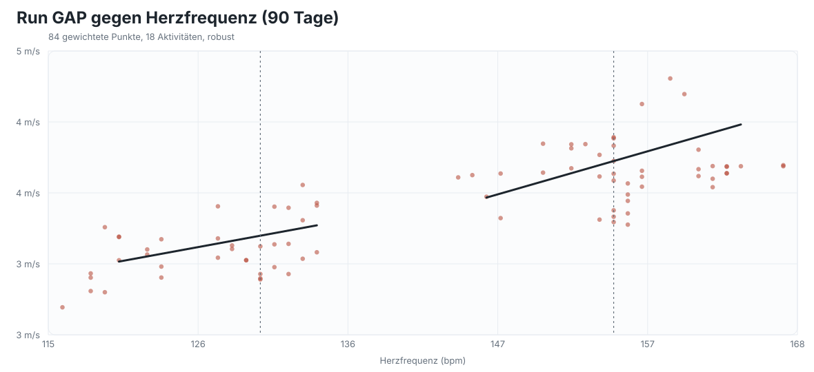
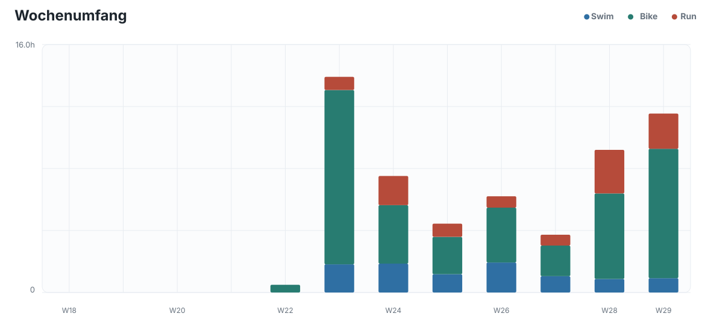
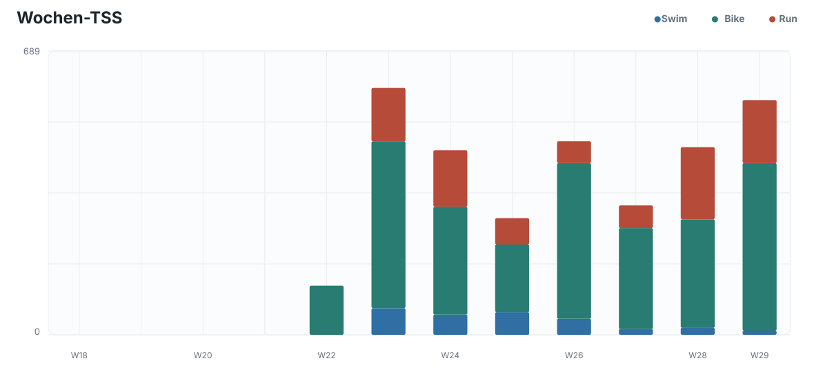
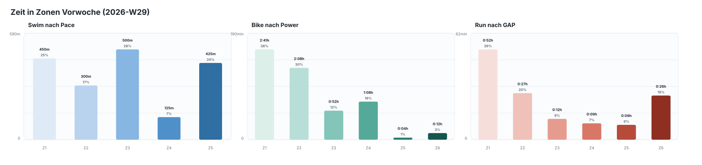

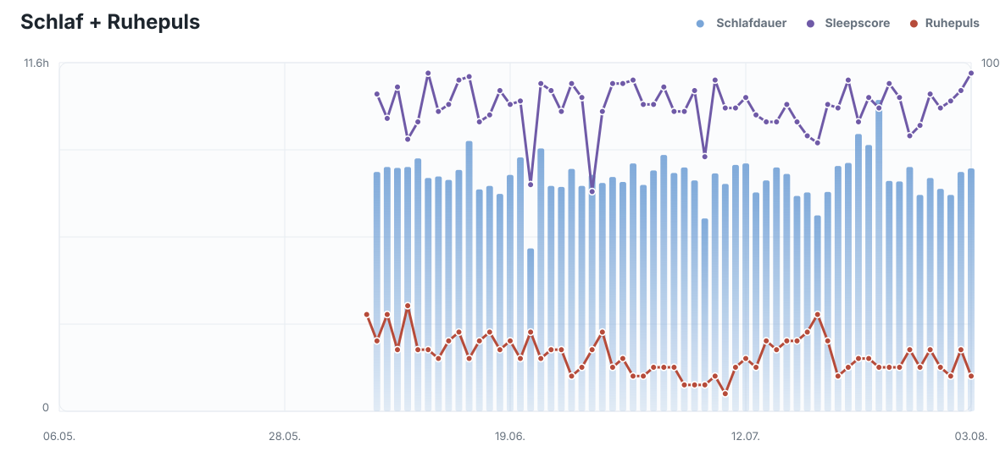

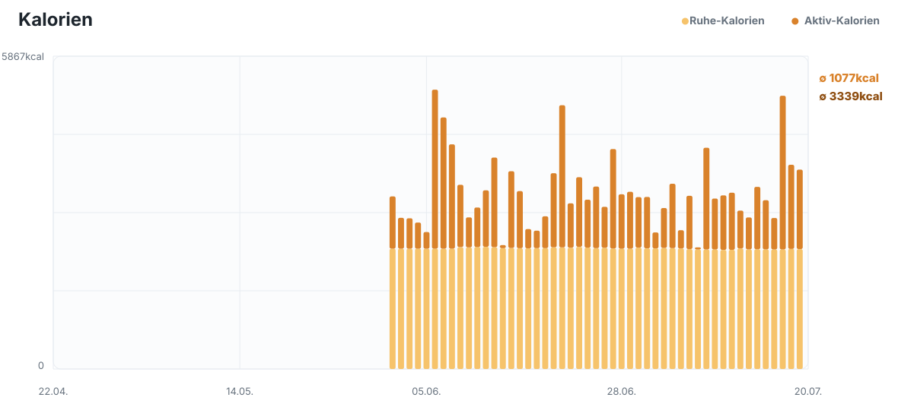